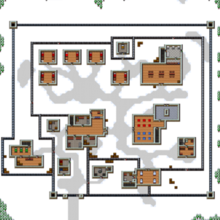

Якщо ви шукаєте проходження цьої карти проходження буде в кінці
Stalag Flucht - друга в'язниця в грі The Escapists . Це в'язниця складніше першої тим що паркан під напругою.
Зарплата - 10 $ -30 $, немає обмеження в інтелекті.
Зарплата - 20 $, потрібно 30 інтелекту.
Зарплата - 30 $, потрібно 30 інтелекту.
Зарплата - 55 $, потрібно 50 інтелекту.
Зарплата - 50 $, потрібно 60 інтелекту.
Ув'язнені - 9 (по 2 в одній камері).
Охоронці - 5.
Знищення паркану, збір підроблених ключів.
Захоплення в'язниці, підкоп, знищення паркану, збір підроблених ключів.